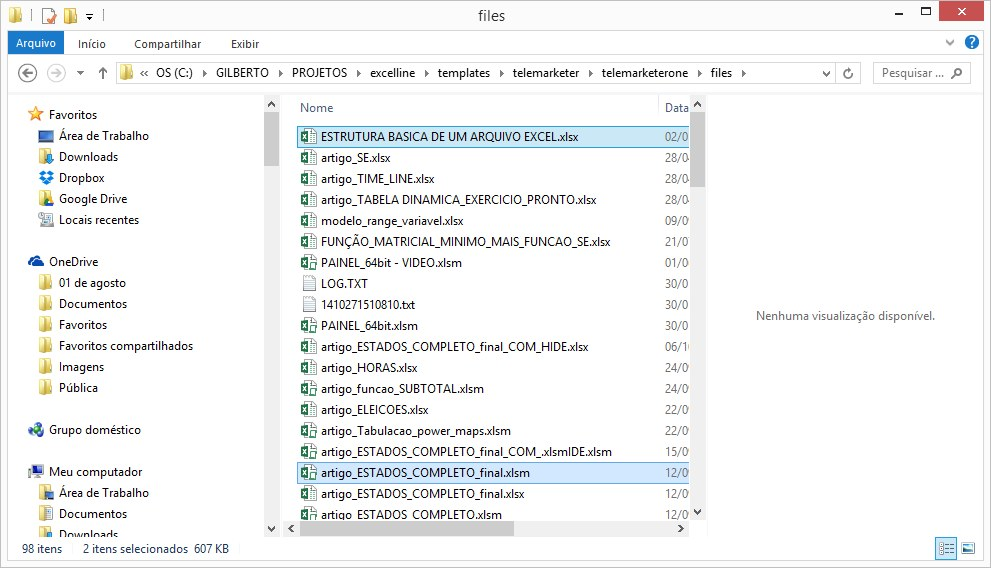
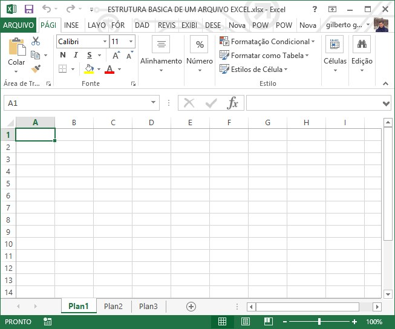
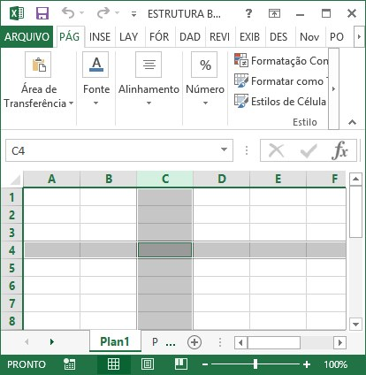

Quando alguém pede para "enviar a planilha Excel", quase sempre quer dizer "anexar o arquivo inteiro" e essa confusão de palavras está na origem de muitos pequenos enganos. Por isso o primeiro passo do Excel Essencial é dar nome certo a cada peça da estrutura: pasta de trabalho, planilha, linha, coluna e célula.
Baixe a planilha do exercício: modelo-excel-conceitos-basicos.xlsx. Ela traz os exemplos deste capítulo com as fórmulas funcionando: altere os valores azuis e veja o resultado. Inclui uma grade que mostra o endereço de cada célula e a prova, por fórmula, dos limites de linhas e colunas.
Pasta de trabalho é o arquivo
Pasta de trabalho é o arquivo que se copia, se anexa ao e-mail e se apaga do disco, aquele que antigamente chamávamos de "planilha Excel". Os arquivos com extensão XLS, XLSX, XLSM e afins são todos pastas de trabalho.

A diferença entre XLSX e XLSM é de segurança. Até o Excel 2003 o formato padrão era o XLS, que podia carregar macros, programas escritos em VBA que automatizam tarefas, mas que também permitem criar vírus perigosos com alguma facilidade. A Microsoft criou então o XLSX, que não carrega macros e por isso é seguro e o XLSM, que pode trazê-las. Ao receber um XLSM vale a atenção: se você conhece e confia na origem, habilite as macros, caso contrário o Excel abre o arquivo como se fosse um XLSX e o risco desaparece.
Planilha é uma folha dentro da pasta
Uma pasta de trabalho é formada principalmente por planilhas e o número delas é limitado apenas pela memória e pelos recursos do computador. Por padrão começamos com algumas, que podem ser renomeadas, inseridas e removidas livremente.

Linhas, colunas e células
Cada planilha é uma matriz bidimensional de linhas e colunas, com limite de 1.048.576 linhas por 16.384 colunas. As linhas são numeradas e as colunas recebem letras, que partem de A, seguem por B, C, até Z, continuam em AA, AB, AC e terminam em XFD.
O cruzamento de uma linha com uma coluna é a célula e seu endereço junta a letra da coluna ao número da linha: a interseção da coluna C com a linha 4 é a célula C4.

Por que isso importa
Nomear com precisão evita ruído na conversa com colegas e com o suporte e prepara o terreno para tudo o que vem a seguir, já que fórmulas, filtros e tabelas dinâmicas trabalham o tempo todo com endereços de células e com nomes de planilhas.